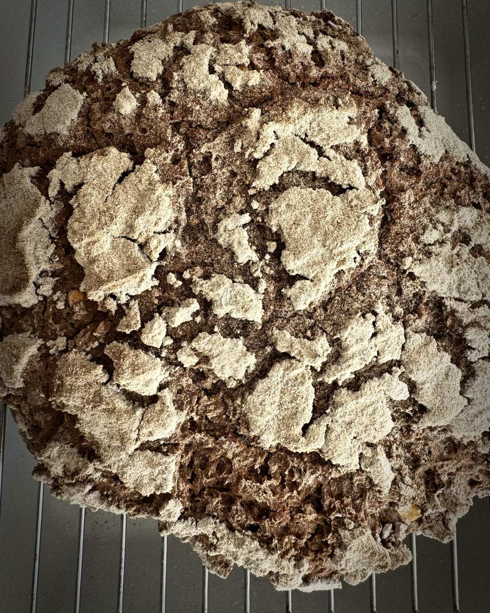
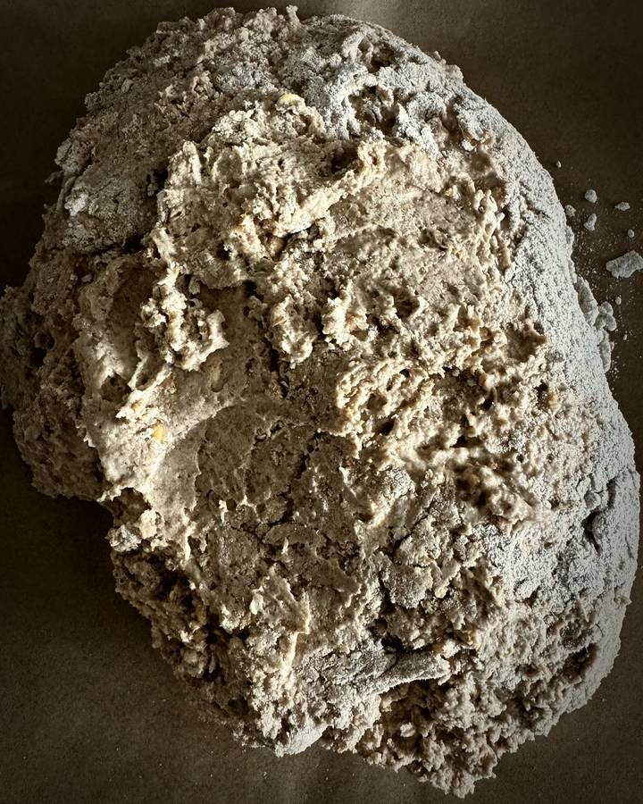
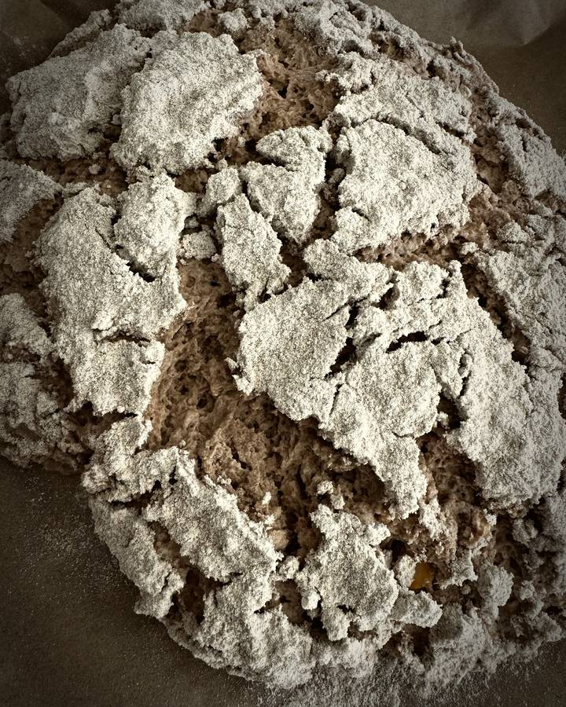
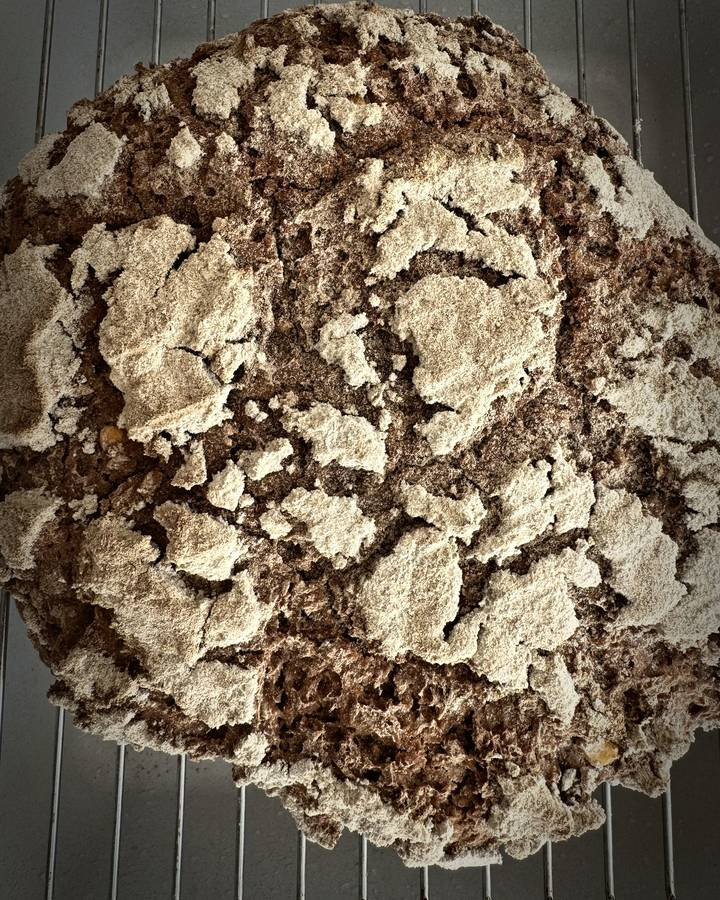

This is ÂLF.
- ÂLF eats flour.
- ÂLF drinks water.
- ÂLF grows.
- And if you take care of ÂLF,
- ÂLF makes bread.
The transformation
- 01ÂLF wakes.
- 02Bubbles appear.
- 03The dough expands.
- 04The surface changes.
- 05Natural cracks.No knife. No scoring.
- 06Heat.
- 07The crust forms.
- 08Bread.
From ÂLF to bread.
No knife. No scoring. The cracks are ÂLF's own.



"Flour. Water. Time. Life."
ÂLF, born in Germany
The ÂLF Box.
Everything you need to begin. One box. One culture. Your bread.
- ÂLFLiving sourdough culture
- THE ÂLF METHODFirst-loaf guide included.
- THE ÂLF JARReusable glass. ÂLF's home.
- THE ÂLF SPOONOriginal wooden spoon. German beech.
- THE ÂLF BIO FLOUR100% whole grain rye
Adopt ÂLF
Adoption by email. Availability on request.
How it works.
Feed ÂLF.
Flour. Water. Stir.
Watch ÂLF grow.
Bubbles. Rising. A sour smell.
Bake.
Mix. Wait. Heat.
Keep ÂLF alive.
Keep a spoonful back. Feed again.
Adopt ÂLF
ÂLF is alive and waiting for a kitchen.
Write us and we will tell you when your ÂLF box can go out.
- What you get
- ÂLF · THE ÂLF METHOD · THE ÂLF JAR · THE ÂLF SPOON · THE ÂLF BIO FLOUR
- How
- By email. Availability on request.